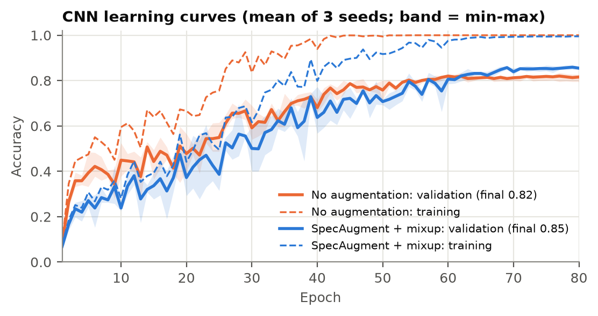

Learning from Sound: How Far Does a Small CNN Get Against Pretrained CLAP on ESC-50?
Sæþór Berg Ásgeirsson and Óliver Bergsson · Introduction to Deep Learning, Fall 2026 ·
Code: github.com/Bougie01/audio_final_project_tol506m
A 1.2M-parameter CNN trained from scratch reaches 0.802 test accuracy on ESC-50, about twice an MFCC
baseline (0.412). A frozen pretrained CLAP model with a linear probe reaches 0.963, at 24× the size. On 23 clips we
recorded ourselves, the CNN falls to 0.52, while zero-shot CLAP, never trained on ESC-50, holds at 0.83.
1. Problem and data
Question. How close does a small CNN trained from scratch get to a large pretrained audio model at
recognising everyday sounds? What does each cost in size and speed, and does either survive sounds recorded with
our own microphones? Small models matter for real-time and on-device use, while pretrained models promise accuracy
without much labelled data.
Data. ESC-50 [1] has 2,000 five-second clips in 50 balanced classes (40 each), in five groups: animals,
natural soundscapes, human non-speech, domestic and urban sounds. The clips are cut from Freesound recordings
(about 600 MB) and released under CC BY-NC 3.0.
Splits and pitfalls. We use the predefined folds: folds 1–3 for training (1,200 clips), fold 4 for
validation (400) and fold 5 for testing (400). The folds keep all clips cut from the same source recording
together, which prevents near-identical audio from leaking between train and test. Every choice was made on
validation, and the test fold was scored once, at the end. Because the classes are balanced, we report accuracy
together with macro-F1. Our own recordings form a separate test set that no model was trained on.
2. Approach and measuring progress
We start simple and change one thing at a time. Each model has one preprocessing function (mono,
peak-normalised, 5 s), used in training and in our live app alike.
Baselines: majority class, and logistic regression on the mean and standard deviation of 40 MFCCs
(80 values per clip), with C = 0.1 chosen on validation.
CNN from scratch: a 128-band log-mel spectrogram (22.05 kHz, 128 × 216) feeds four blocks of two
3×3 convolutions with batch norm, ReLU and max-pooling (32→256 channels). Mean-pooling over frequency, mean + max
pooling over time, dropout 0.3 and a linear layer follow: 1.19M parameters in total. We train with AdamW and a
one-cycle learning rate (peak 2·10⁻³) for 80 epochs, keeping the best-validation checkpoint.
Augmentation ablation: no augmentation → SpecAugment [3] (random time shift, two frequency and two
time masks) → SpecAugment + mixup [4] (α = 0.4). Each variant is trained with 3 seeds and reported as
mean ± std, so a gain can be compared with seed noise.
Pretrained CLAP [2] (laion/clap-htsat-unfused, frozen, 48 kHz input).
Zero-shot: each clip is matched to the nearest of 50 text prompts, comparing two prompt wordings.
Linear probe: logistic regression on the 512-d audio embeddings (C = 10, chosen on validation).
MLP head: one hidden layer of 512 units, 3 seeds.
Every run is logged to runs/results.csv, and learning curves are kept per run.
Model
Params
CPU ms
Val acc
Test acc
Test F1
Own rec. (n = 23)
Majority class
–
–
0.020
0.020
0.001
–
MFCC + logistic regression
4k
–
0.450
0.412
0.390
–
CNN, no augmentation
1.19M
0.829 ± 0.010
–
–
–
CNN + SpecAugment
1.19M
0.838 ± 0.003
–
–
–
CNN + SpecAugment + mixup
1.19M
63
0.863 ± 0.007
0.802 ± 0.005
0.788 ± 0.009
0.522
CLAP zero-shot, “the sound of a X”
28.2M*
0.860
–
–
–
CLAP zero-shot, “This is a sound of X.”
28.2M*
429
0.903
0.893
0.886
0.826
CLAP + linear probe
28.2M
429
0.983
0.963
0.961
0.783
CLAP + MLP head
28.5M
0.976 ± 0.001
0.961 ± 0.001
0.959 ± 0.002
–
Table 1. Results on ESC-50 (validation = fold 4, test = fold 5) and on our own recordings.
± = std over 3 seeds; – = not tested, because only the variants chosen on validation were scored on test.
F1 = macro-F1. Params = weights used at inference; *the text encoder (125M more) is only needed once, to embed the 50 prompts.
CPU ms = time per 5-s clip on a laptop CPU, feature extraction included.
3. Results
The CNN doubles the baseline: 0.802 vs 0.412 test accuracy.
Mixup helps by more than the noise. It adds 3.4 validation points over no augmentation, and all three
mixup seeds (≥ 0.855) beat all three unaugmented seeds (≤ 0.835). SpecAugment alone adds 0.9 points, within the
seed spread. Figure 1 shows why: without augmentation the CNN memorises the training set by epoch 42 and stalls
at 0.82, while with mixup validation accuracy is still rising at epoch 80.
CLAP wins with little or no training. Zero-shot CLAP beats our trained CNN (0.893 vs 0.802), and the
prompt wording alone moves it by 4 points. An MLP head is no better than a linear probe, so the embeddings are
already close to linearly separable.
Accuracy has a cost: CLAP's audio encoder is 24× larger and 7× slower on a CPU than the CNN.
Every model drops from validation to test (CNN −6.1, MFCC −3.8, CLAP probe −2.0 points). Fold 5
seems harder, and the CNN's validation score is slightly optimistic because validation chose its epoch and
augmentation.

Figure 1. CNN training (dashed) and validation (solid) accuracy, mean of 3 seeds. Without
augmentation the model overfits early; mixup keeps validation accuracy improving.
4. Error analysis
CNN (77 of 400 test clips wrong). The weakest classes are airplane (1/8 correct), hen (2/8) and
helicopter, pig and water drops (3/8). The most frequent confusions are airplane → thunderstorm, fireworks →
crackling fire (4 each), wind → siren, clapping → rain and hen → laughing (3 each). Urban sounds are its weakest
group (0.70, vs 0.81–0.85).
Why. Engines, wind and aircraft are broadband noise with little time–frequency structure for small
filters to latch onto. With 24 training clips per class, the CNN also learns texture rather than source, so dense
clicks (clapping, rain) and crackles (fireworks, fire) get mixed up.
CLAP probe (15 errors) still finds helicopter hardest (3/8, taken for airplane or washing machine).
Zero-shot (43 errors) fails where the label is vague: insects (1/8), wind (2/8), hen → rooster (5 times).
The probe gets all three of those classes right, so the text side is the weak point there, not the audio.
5. Real-world test: our own recordings
We recorded 23 clips of 13 household classes (e.g. coughing, door knock, keyboard typing, pouring water) with
laptop microphones in ordinary rooms, through our app. All three models drop (Table 1, last column), and the more a
model was fitted to ESC-50, the more it drops: the CNN loses 28.5 points, the probe 18.0 and zero-shot CLAP only
6.6. The ranking flips: zero-shot CLAP, never trained on ESC-50, becomes the best model. Our reading is that
fitting to 1,200 ESC-50 clips also fits ESC-50's recording style.
The app recorded at 16 kHz. As a control, we downsampled the official test fold to 16 kHz: this costs only
1.2–2.8 points, so the sample rate explains little of the gap. The CNN misses pouring water, footsteps, snoring and
wind, which CLAP gets right. For three of the five coughs, all three models agree on the same wrong label, which
points to the clips (the cough may fall outside the centre 5-s window that is analysed) rather than the models.
The CNN's confidence is lower on its errors (0.52 on average) than on correct answers (0.77). With 23 clips, one
clip is worth 4.3 points, so these results are indicative rather than precise.
6. Limitations and next steps
Possible overlap: CLAP's pretraining data includes Freesound audio, the same source as ESC-50, so its
scores may be optimistic.
One small test fold: with 8 clips per class, one clip moves a class by 12.5 points. ESC-50's usual
protocol is 5-fold cross-validation; we kept a fixed split to have one untouched test set.
Closed set: the models always pick one of the 50 classes, so speech or music gets a confident wrong
label.
Next steps: (1) distil CLAP into the small CNN; (2) fine-tune on our own recordings, with recording
sessions split between training and testing; (3) add an “unknown” answer, using a confidence threshold calibrated
on sounds outside the 50 classes; (4) run 5-fold cross-validation.
References
K. J. Piczak. ESC: Dataset for Environmental Sound Classification. ACM Multimedia, 2015. github.com/karolpiczak/ESC-50
Y. Wu, K. Chen, T. Zhang et al. Large-scale Contrastive Language-Audio Pretraining with Feature Fusion and Keyword-to-Caption Augmentation. ICASSP, 2023.
D. S. Park et al. SpecAugment: A Simple Data Augmentation Method for Automatic Speech Recognition. Interspeech, 2019.
H. Zhang, M. Cisse, Y. N. Dauphin, D. Lopez-Paz. mixup: Beyond Empirical Risk Minimization. ICLR, 2018.
AI disclosure. We used generative AI (Claude by Anthropic, via Claude Code) as a
coding and writing assistant: for the user interface of our app, for writing and debugging the training and
evaluation code, and for formatting the report. An AI-drafted first version of the report was rewritten in our own
words. We reviewed all code and results and take responsibility for the content.